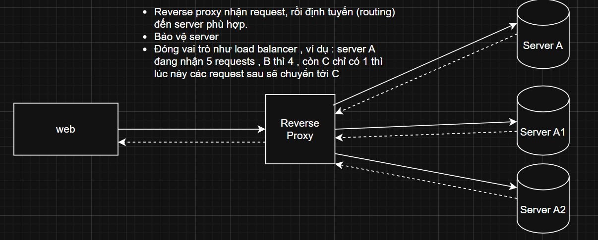

Backend & Hạ tầng
Những khái niệm hạ tầng hay bị hỏi kèm sau phần backend: CDN, Bloom filter, HTTP caching, reverse proxy, ảo hoá và phần cứng ảnh hưởng thế nào tới hiệu năng hệ thống.
CDN là gì và đặt ở đâu trong hệ thống?
CDN (Content Delivery Network) là hệ thống gồm nhiều máy chủ đặt ở nhiều vị trí địa lý khác nhau. Mục tiêu là phân phối nội dung tĩnh — hình ảnh, video, file JS/CSS, trang web tĩnh — tới người dùng nhanh hơn, bằng cách phục vụ từ máy chủ gần người dùng nhất thay vì luôn đi về origin server.
Lợi ích của việc dùng CDN
| Lợi ích | Giải thích |
|---|---|
| Tăng tốc tải trang | Giảm độ trễ vì nội dung được tải từ máy chủ gần người dùng. |
| Giảm tải máy chủ gốc | CDN xử lý phần lớn các yêu cầu cho tài nguyên tĩnh. |
| Tăng khả năng chịu tải | Phục vụ nhiều người dùng cùng lúc mà origin không bị quá tải. |
| Bảo mật hơn | Nhiều CDN hỗ trợ chống DDoS, SSL/TLS, tường lửa ứng dụng (WAF). |
| Ổn định hơn | Nếu một máy chủ CDN gặp sự cố, các máy chủ khác tiếp quản. |
"CDN nằm trước origin và chỉ phục vụ nội dung tĩnh: ảnh, video, bundle JS/CSS. Lợi ích lớn nhất không chỉ là tốc độ do phục vụ từ edge gần người dùng, mà còn là giảm tải cho server gốc — phần lớn request tĩnh không còn chạm tới backend, nên backend chỉ còn lo phần động. Ngoài ra CDN thường kèm sẵn chống DDoS và SSL nên cũng là một lớp bảo mật."
RedisBloom — Bloom Filter dùng để làm gì?
Bloom filter là cấu trúc dữ liệu xác suất, trả lời câu hỏi “phần tử này chắc chắn chưa từng có hay có thể đã có” với bộ nhớ rất nhỏ. RedisBloom là module cung cấp cấu trúc này ngay trên Redis.
Dùng khi nào
- Khi cần kiểm tra sự tồn tại của một phần tử trong tập cực lớn — ví dụ tìm 1 user trong hàng tỷ user — mà không muốn quét database.
- Kết quả có thể false positive (báo “có thể có” dù thực tế không có), nhưng không bao giờ false negative: đã báo “chưa có” thì chắc chắn chưa có.
Đặt bloom filter trước database: nếu filter nói “chưa từng có” thì trả lời ngay, khỏi cần query. Chỉ khi filter nói “có thể có” mới đi xuống DB kiểm tra chính xác. Nhờ vậy phần lớn request tra cứu vô nghĩa bị chặn ở tầng Redis.
@UseInterceptors(FileInterceptor('file')) làm gì?
Đây là cú pháp decorator của NestJS để xử lý upload file từ phía client. Nó dùng interceptor để can thiệp vào quá trình xử lý request, giúp NestJS trích xuất file từ multipart/form-data.
Giải thích từng phần
@UseInterceptors(...)
- Là decorator trong NestJS, dùng để áp dụng một hoặc nhiều interceptor cho route handler.
- Interceptor là lớp trung gian cho phép xử lý logic trước và sau khi controller method chạy — giống middleware nhưng mạnh hơn.
FileInterceptor('file')
- Là interceptor do NestJS cung cấp qua thư viện
@nestjs/platform-express. - Bên dưới nó dùng
multerđể xử lý việc upload file. 'file'là tên của field trong form chứa file upload.
<input type="file" name="file" />@Post('upload')
@UseInterceptors(FileInterceptor('file'))
uploadFile(@UploadedFile() file: Express.Multer.File) {
// file.originalname, file.mimetype, file.buffer / file.path
return { name: file.originalname, size: file.size };
}SSD khác HDD ở những điểm nào?
| Tiêu chí | SSD (Solid State Drive) | HDD (Hard Disk Drive) |
|---|---|---|
| Tốc độ | Rất nhanh (đọc/ghi nhanh gấp 5–20 lần) | Chậm hơn nhiều so với SSD |
| Độ bền | Không có bộ phận cơ học, ít hỏng do va đập | Có bộ phận quay, dễ hỏng nếu bị rung lắc |
| Tiếng ồn | Hoạt động êm, không phát ra tiếng | Có thể phát ra tiếng khi hoạt động |
| Tiêu thụ điện | Ít điện năng hơn | Tốn nhiều điện năng hơn |
| Dung lượng phổ biến | 128GB – 2TB | 500GB – 10TB hoặc hơn |
| Giá thành (cùng dung lượng) | Đắt hơn (cao gấp 2–4 lần hoặc hơn) | Rẻ hơn nhiều |
| Khả năng phục hồi dữ liệu khi lỗi | Khó hơn nếu bị lỗi nặng | Dễ phục hồi dữ liệu hơn |
| Ứng dụng phù hợp | Laptop, gaming, làm việc chuyên nghiệp, hệ điều hành | Lưu trữ lớn, backup, camera giám sát… |
Database đặt trên SSD giúp giảm mạnh thời gian random read — thứ mà index B-Tree phụ thuộc rất nhiều. Ngược lại, dữ liệu lịch sử / log ít truy cập thì để trên HDD dung lượng lớn sẽ rẻ hơn nhiều.
GPU là gì, khác CPU chỗ nào?
GPU (Graphics Processing Unit) là bộ xử lý đồ họa — con chip chuyên xử lý hình ảnh, màu sắc và chuyển động trên màn hình máy tính hoặc điện thoại.
Nhờ có hàng nghìn nhân hoạt động cùng lúc, GPU giúp giảm tải cho CPU khi chạy các tác vụ nặng. Điểm mấu chốt để trả lời phỏng vấn: CPU mạnh ở xử lý tuần tự phức tạp với ít luồng, còn GPU mạnh ở xử lý song song rất nhiều phép tính đơn giản — nên GPU cũng được dùng cho các tác vụ ngoài đồ họa như encode video, machine learning.
Hyper-V
là một công nghệ ảo hóa do Microsoft phát triển, cho phép tạo và quản lý các máy ảo trên hệ điều hành Windows. Nó được tích hợp sẵn trong các phiên bản Windows Server và một số phiên bản Windows Pro và Enterprise dành cho máy tính cá nhân.Proxy
Reverse Proxy

HTTP caching
- là cơ chế giúp trình duyệt (hoặc proxy) lưu lại phản hồi từ server để tái sử dụng trong tương lai mà không cần gửi lại request đến server, từ đó:
- Giảm tải server
- Tăng tốc độ tải trang
- Tiết kiệm băng thông
Thumbnail
- là một phiên bản rút gọn, nén, và thu nhỏ của ảnh gốc, thường được dùng để:
- Tăng tốc độ load UI
- Hiển thị ảnh preview trong danh sách, gallery, video, bài viết, v.v.
- Tiết kiệm băng thông
- Giảm memory footprint khi render số lượng lớn ảnh